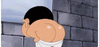
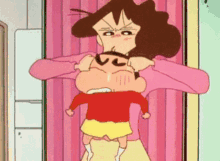

Sinchan School Time Table
| Time Table |
| Hours |
Mon |
Tue |
Wed |
Thur |
Fri |
| science |
maths |
social |
english |
drawing |
| Telugu |
Hindhi |
science |
maths |
arts |
| lunch |
| science |
maths |
science |
maths |
project |
| science |
maths |
science |
maths |
Sinchan is working hard for going to school

- Crayon Shin-chan (Japanese: クレヨンしんちゃん, Kureyon Shin-chan, also known as Shin-chan in other countries) is a Japanese manga and anime series written by Yoshito Usui.
-
It has 56 (including the New Crayon Shin-chan series)
mangavolumes. The anime has been broadcast since 1992, and there are twenty-four movies as of 2016..
click on below Image To get More Information
Sinchan Playing With her Mom
